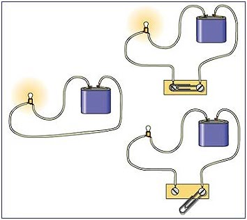
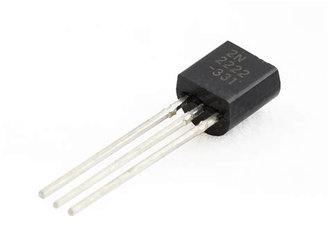
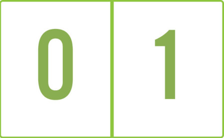
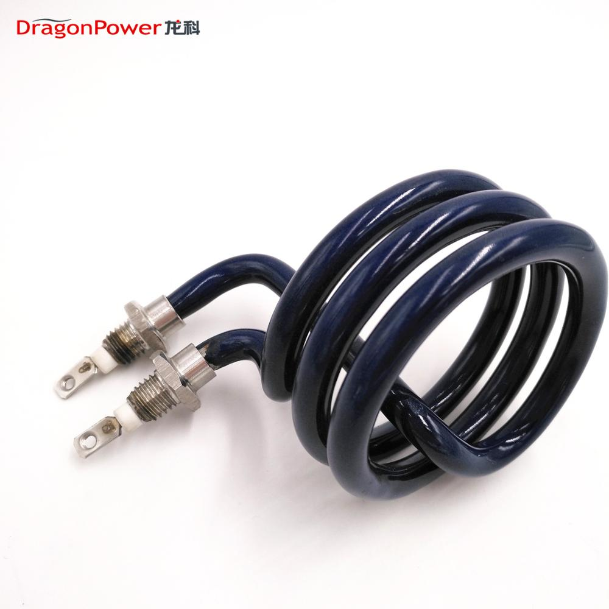
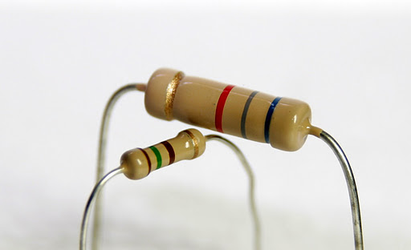
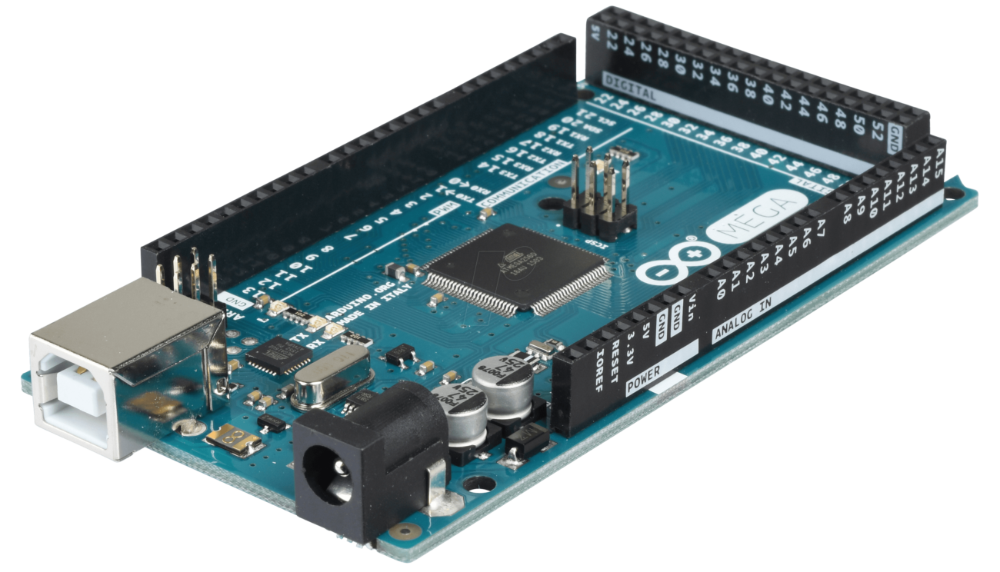
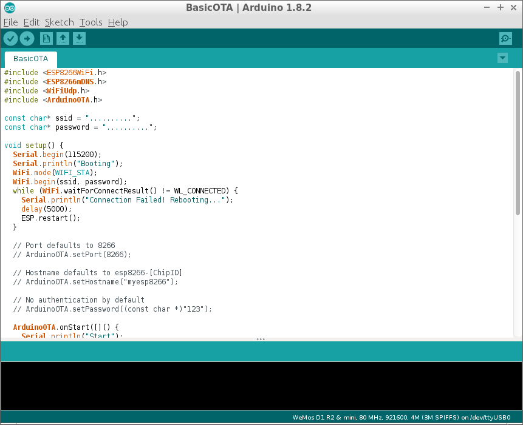

Como hemos aprendido en el colegio, un flujo constante de pequeñas
partículas conocidas como electrones genera lo que es conocido como
corriente eléctrica.
La electrónica es una rama de la físca, que estudia como tratar con
la emisión, el flujo y el control de los electrones. Por ejemplo cuando
encendemos una bombilla dirigimos mediante un circuito eléctrico el flujo
de electrones desde la fuente hasta la bombilla.

Por lo tanto es posible controlar el flujo de electricidad a nuestro antojo
y no solo eso, sino que también podemos elegir el momento en el que enviaremos
los electrones y en que momento no.
En la imagen anterior vemos que hay un clip
movil que nos permite cortar el flujo de energía a la bombilla, este aparato es
conocido como interruptor y como su nombre indica, permite interrumpir el
flujo de electrones desde la fuente a la bombilla.
Esta forma de electrónica es la que se veía al principio, pero a medida que los aparatos
eléctricos se iban haciendo mas complejos, la electrónica utilizada en ellos también se iba
haciendo mas detallada.
Sin embargo, el gran salto se dio cuando en los años 30 se invento el transistor, este
componente permite entregar una señal de salida en respuesta a una señal de entrada, aunque no
entendamos del todo este concepto, debemos entender que este componente permitió dar un gran salto
no solo en la electrónica sino también fue un gran salto para la humanidad, es gracias a este invento
que nace la electrónica digital.

Como mencionamos antes, gracias al transistor se pudo avanzar a la electrónica digital ya que
las diferentes combinaciones entre ellos permitían generar lo que se conoce como puertas lógicas,
sin embargo antes debemos conocer antes los bits.
En la electrónica, los estados de energía pueden ser: con energía o sin energía, debido a esto
se empezó a utilizar el cero para representar el estado sin energía y el uno para el estado con
energía. Al ser estos dos números los únicos que intervienen, se le llama representación binaria de
la energía (binario viene de dos elementos). La palabra BIT es por tanto una mezcla de dos
palabras en ingles Binary digit.

Más adelante volveremos sobre este tema, ya que lo necesitaremos para poder entender otros conceptos mas complejos para nuestros proyectos, solo debemos quedarnos con el concepto de estados de energía.
Como vimos en el ejemplo de la bombilla, lo único que necesitábamos era una fuente de energía y un
destino para dicha energía, pero y qué pasa si nuestro elemento destino no es una bombilla, sino mas
bien es un componente mas sensible a las tensiones eléctricas altas o que requiere de una tensión
exacta para su correcto funcionamiento.
Tal vez podría solucionarse con una fuente de menos potencia, pero la mayoría de fuentes no son del todo
regulables y en algunos casos el componente requiere una tensión precisa.
Las resistencias vienen a solventar nuestro problema, ya que siendo colocadas en el camino del flujo de
energía, ejercen una resistencia al flujo de energía lo cual hace que este disminuya. Para entender mejor
este concepto vamos a ver un ejemplo sencillo.
Supongamos que queremos llevar agua de un punto a otro, para este fin utilizamos tuberías desde la fuente
de agua al destino, sin embargo la fuerza de la corriente de agua es tan fuerte que si dejamos que fluya,
haría que el destino se inunde. Podemos pensar que si cerramos y abrimos el grifo muchas veces podríamos
llenarlo hasta el nivel que queremos, pero esto sería una perdida de energía y tiempo. Se nos ocurre una
mejor idea, colocamos en el camino una tubería en espiral, esta tubería refrena la corriente de
agua y podemos obtener un flujo mas manejable, ya que la tubería en espiral ejerce una resistencia en la
corriente.

Las resistencias tienen el mismo principio, nos permiten regular la tensión haciéndola bajar (nunca subir), ademas las resistencias pueden agruparse por diferentes valores para conseguir tensiones de salida exactas.

En las próximas clases veremos como es el uso real de las resistencias en muchos proyectos.
Este componente surgió como un proyecto de una universidad italiana, el cual pretendía proporcionar
una forma fácil y económica de que principiantes y profesionales crearan dispositivos que pudieran
interactuar con su entorno mediante sensores y actuadores.
Arduino nos permite programar las salidas mediante el uso de un lenguaje de programación, de forma
tal que podemos dar comportamientos complejos a nuestro proyectos de electrónica.

Este hecho sumado a que la placa también es capaz de leer señales de otros componentes electrónicos
facilita la creación de aparatos capaces de recibir estímulos del exterior y comportarse de acuerdo
a las circunstancias.
Por ejemplo, si conectamos un sensor de luz podemos programarlo para que cuando la intensidad de la
luz sea muy baja (este oscuro) se encienda alguna bombilla, etc.
Para programar la placa de Arduino, utilizamos una plataforma de programación especial. En ella escribiremos todo el código de que ingresaremos en la placa, para manipular tanto las señales de entrada como de salida.

El lenguaje de programación que utiliza es C++ pero en este curso no veremos muy en profundidad este lenguaje, solo lo mas básico y necesario para nuestros proyectos. Queda entonces por parte del alumno explorar este y otros lenguajes de programación para su dominio.
Volver al índice